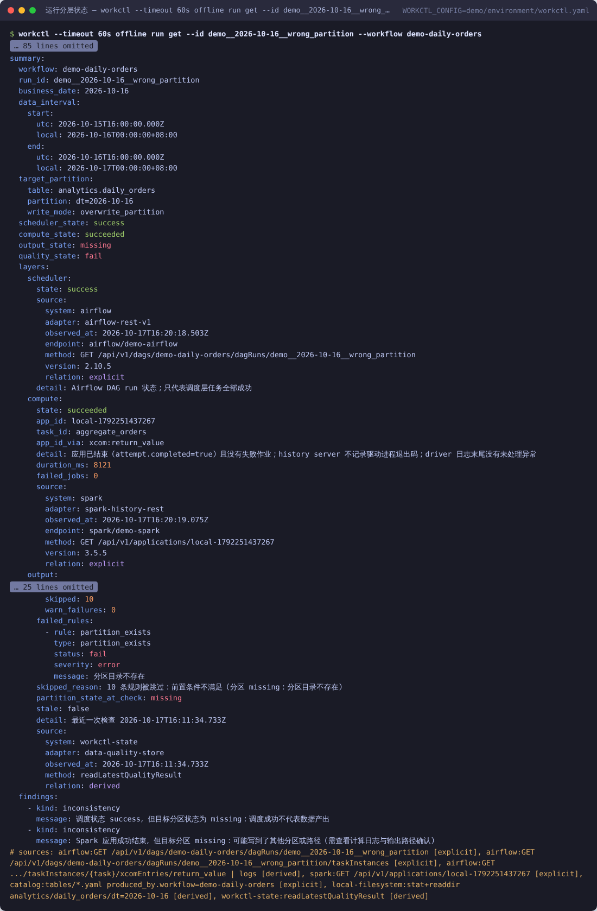
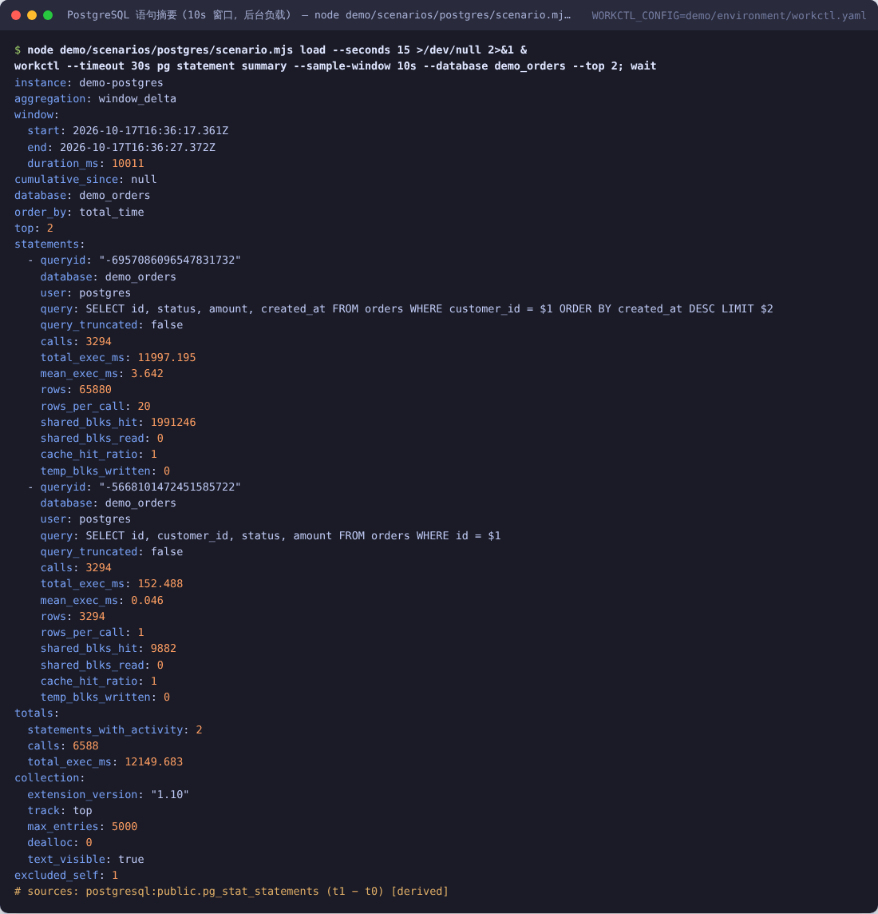
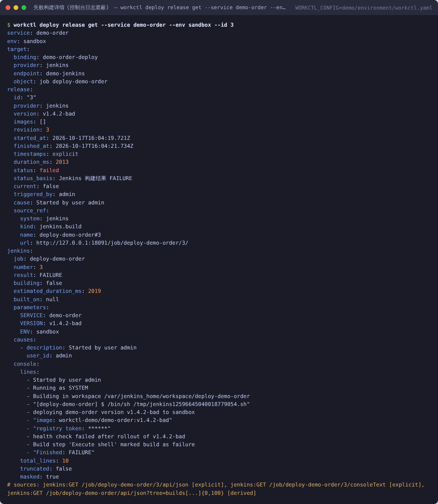

每个能力只定义一次（参数、输出 Schema、口径说明），命令行、脚本 API、MCP 工具与文档都由它生成；Skill 把领域经验与排查流程交给 Agent。
Agent 通过目录与 Skill 找到能力；“待接入”的能力只出现在目录里，不能被调用，避免把规划说成已有。
服务 → 容器 → 指标 → 日志 / 调用链 → 缓存 → 数据库；调度 → 计算 → 分区 → 质量，每一层单独给出来源。
插件协议 workctl-plugin/1：安装后命令、帮助、目录与 MCP 工具自动出现；也可实现目录中“待接入”的能力。
验证方式：在隔离环境中运行真实服务，用逐能力用例（含预期错误）与集成测试调用；版本号为实测版本。
| 板块 | 系统 | 代表能力 | 实测版本 |
|---|---|---|---|
| 基础设施 | Docker · Kubernetes | 工作负载状态、事件、资源快照、受控重启 | 29.8 · k3s 1.31 |
| Prometheus · Loki | 指标查询、日志查询、日志重建调用链 | 3.5.0 · 3.5.5 | |
| etcd · Nacos · Consul | 配置读取与修订差异（敏感值遮蔽）、服务发现 | 3.5 · 2.4 · 1.20 | |
| Kubernetes · Jenkins | 发布记录、失败原因、回滚计划与受控执行 | 1.31 · 2.541 | |
| 中间件 | MySQL | 语句采样差分、慢日志、执行计划、受限只读查询、索引计划 | 8.4.11 |
| PostgreSQL | pg_stat_statements 窗口差分、阻塞链、表膨胀、执行计划 | 16.15 | |
| Redis | 命中率窗口采样、慢命令、SCAN 抽样、热度（LFU） | 7.4.11 | |
| Kafka · OpenSearch 插件 | 消费组积压；索引健康、受限查询、部分分片失败 | 3.9.1 · 2.19.3 | |
| 离线链路 | Airflow 2 / 3 | 按业务日期找运行、四层状态、日志、补数计划与执行 | 2.10.5 · 3.3.2 |
| Spark · Trino | 作业 / Stage / driver 日志、只读 SQL 提交与取消 | 3.5.5 · 476 | |
| 数据目录与仓库 | 分区检查、显式 / 推断血缘、质量规则、产出时效 | 本地文件系统 |
平台不支持的能力会明确说明，不会编造：例如 Consul KV 不保存历史，查配置差异时返回“数据不可用”；Kubernetes 不记录发布触发人，就标为空。
Apollo / ZooKeeper、Argo CD / Spinnaker、文档库 / KV、分析数据库、对象存储 / HDFS、YARN、RabbitMQ 等。
以下为 Claude Code 无头模式经 Skill + MCP、在只读权限下的实际运行（截图为同一环境中的真实命令输出）。



同一任务对照：加载 workctl Skill 的 Agent 与只用命令行的 Agent 答对同样多的关键事实，但调用更少、成本更低。
典型问题：只读防护被特殊 SQL 写法绕过、凭据从 URL / 日志 / 报错中泄露、截断结果被报为“完整”、回滚与并发发布竞态。完整复位后 10 个验证套件 231/231、集成测试 908/908。
需要贵司提供：演示用只读账号、可接入的平台清单（如配置中心、发布系统、调度）、1–2 个真实排查案例作为任务卡。